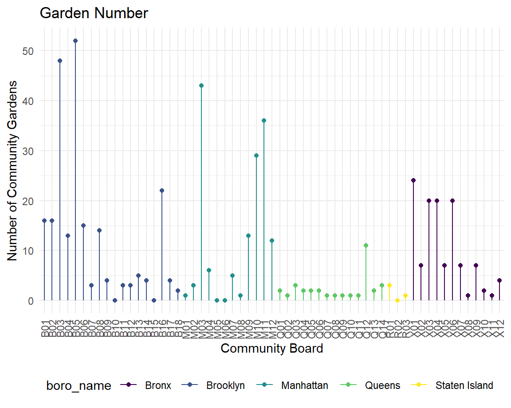

library(tidyverse)## ── Attaching packages ────────────────────────────────────────────────────── tidyverse 1.3.0 ──## ✓ ggplot2 3.3.2 ✓ purrr 0.3.4
## ✓ tibble 3.0.3 ✓ dplyr 1.0.2
## ✓ tidyr 1.1.1 ✓ stringr 1.4.0
## ✓ readr 1.3.1 ✓ forcats 0.5.0## ── Conflicts ───────────────────────────────────────────────────────── tidyverse_conflicts() ──
## x dplyr::filter() masks stats::filter()
## x dplyr::lag() masks stats::lag()library(patchwork)
#Set global theme for plots
theme_set(theme_minimal() +
theme(legend.position = "bottom",
axis.text.x = element_text(angle = 90, vjust = 0.5, hjust = 1)))
#Set options for all plots
options(
ggplot2.continuous.colour = "viridis",
ggplot2.continuous.fill = "viridis"
)
scale_colour_discrete = scale_colour_viridis_d
scale_fill_discrete = scale_fill_viridis_dhealth_data <-
read_csv("./data/final_df.csv") %>%
select(community_board, garden_name, obesity, hypertension, life_expectancy, self_rep_health) %>%
mutate(duplicate = community_board) %>%
separate(duplicate, c("boro", NA), sep = 1)## Parsed with column specification:
## cols(
## .default = col_double(),
## community_board = col_character(),
## borough = col_character(),
## name = col_character(),
## boro = col_character(),
## garden_name = col_character(),
## address = col_character(),
## neighborhood_name = col_character()
## )## See spec(...) for full column specifications.num_gardens <-
health_data %>%
drop_na(garden_name) %>%
group_by(community_board) %>%
summarize(garden_num = n())## `summarise()` ungrouping output (override with `.groups` argument)unique_comboard <-
health_data %>%
distinct(community_board, .keep_all = TRUE)
health_data_final <-
left_join(unique_comboard, num_gardens, by = "community_board") %>%
select(-garden_name) %>%
replace_na(list(community_board = 0, obesity = 0, hypertension = 0, life_expectancy = 0, self_rep_health = 0, boro = 0, garden_num = 0)) %>%
mutate(
boro_name = case_when(
boro == "M" ~ "Manhattan",
boro == "X" ~ "Bronx",
boro == "B" ~ "Brooklyn",
boro == "Q" ~ "Queens",
boro == "R" ~ "Staten Island"
))Variables needed: community_board garden_name
obesity: Percentage of adults ages 18 and older who have obesity (Body Mass Index of 30 or greater) based on self-reported height and weight hypertension: Percentage of adults ages 18 and older who report ever being told by a healthcare professional that they have hypertension, also known as high blood pressure life_expectancy: Life expectancy at birth self_rep_health: Percentage of adults ages 18 and older who report their overall health is “excellent,” “very good” or “good” on a scale of excellent, very good, good, fair or poor
https://www.r-graph-gallery.com/183-choropleth-map-with-leaflet.html
obesity_graph <-
health_data_final %>%
ggplot(aes(x = community_board, y = obesity, color = boro_name)) +
geom_point() +
geom_segment( aes(x = community_board, xend = community_board, y = 0, yend = obesity)) +
labs(
title = "Obesity",
x = "Community Board",
y = "Percent of Adults with Obesity"
)
life_expect_graph <-
health_data_final %>%
ggplot(aes(x = community_board, y = life_expectancy, color = boro_name)) +
geom_point() +
geom_segment( aes(x = community_board, xend = community_board, y = 0, yend = life_expectancy)) +
labs(
title = "Life Expectancy",
x = "Community Board",
y = "Life Expectancy in Years"
)
htn_graph <-
health_data_final %>%
ggplot(aes(x = community_board, y = hypertension, color = boro_name)) +
geom_point() +
geom_segment( aes(x = community_board, xend = community_board, y = 0, yend = hypertension)) +
labs(
title = "Hypertension",
x = "Community Board",
y = "Percent of Adults with Hypertension"
)
self_rep_graph <-
health_data_final %>%
ggplot(aes(x = community_board, y = self_rep_health, color = boro_name)) +
geom_point() +
geom_segment( aes(x = community_board, xend = community_board, y = 0, yend = self_rep_health)) +
labs(
title = "Self Reported Health",
x = "Community Board",
y = "Percent of Adults with Self Reported Good Health"
)
garden_graph <-
health_data_final %>%
ggplot(aes(x = community_board, y = garden_num, color = boro_name)) +
geom_point() +
geom_segment( aes(x = community_board, xend = community_board, y = 0, yend = garden_num)) +
labs(
title = "Garden Number",
x = "Community Board",
y = "Number of Community Gardens"
)
(garden_graph + self_rep_graph + life_expect_graph + htn_graph + obesity_graph)